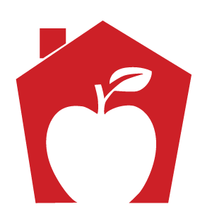
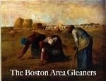
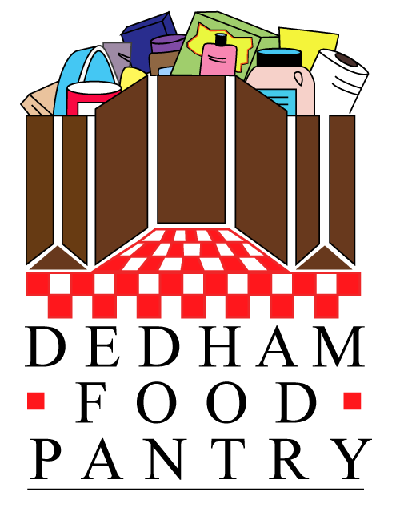
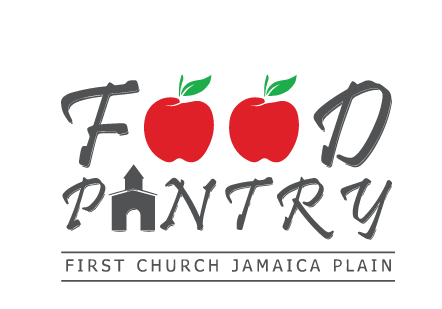
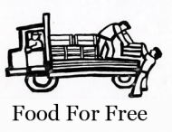
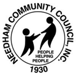
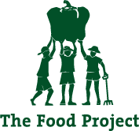
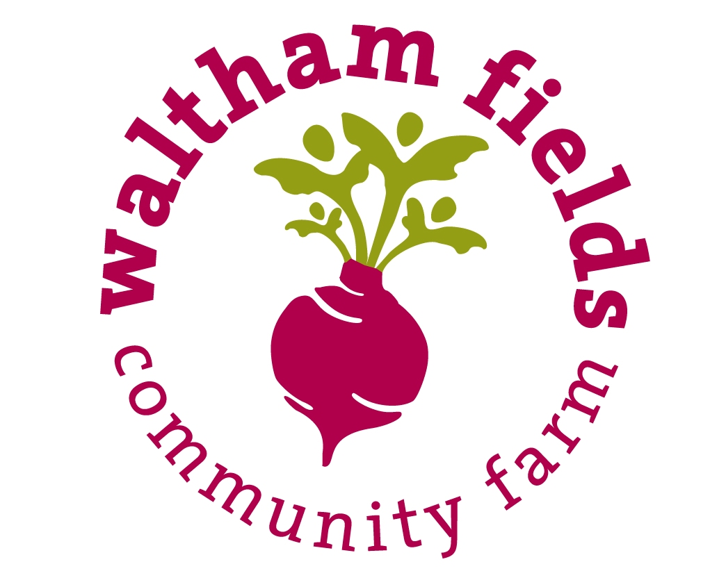

Legend
-

A Place to Turn
-

Boston Area Glearners
-

Dedham Food Party
-

First Church of Jamaica Plain Food Pantry
-

Food for Free
-
JF&CS Family Table
-

Needham Community Council
-
 Open Table
Open Table -

The Food Project
-
 Ripples of Hope
Ripples of Hope -

Waltham Fields Community Farm
-
Wellesley Food Pantry